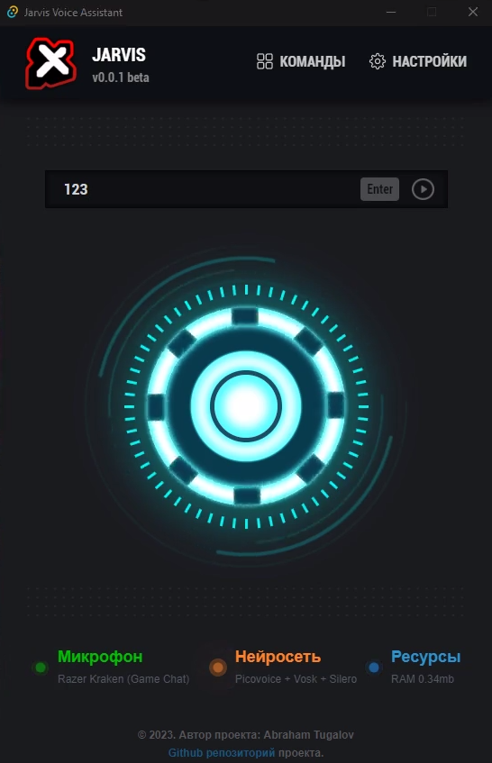

Джарвис
универсальный голосовой помощник
Стек технологий джарвиса NodeJS + npm + TypeScript + Tauri + Vite + Svelte + Rust + SurrealDB Установить самую новую версию можно ниже

Стек технологий джарвиса NodeJS + npm + TypeScript + Tauri + Vite + Svelte + Rust + SurrealDB Установить самую новую версию можно ниже
Перейдите в настройки джарвиса, там надо вписать свои API ключи от сервиса Picovoice и ChatGpt но версия с ChatGpt еще находится в разработке и поэтому вписывать API ключ не обязательно. Конфигурация джарвиса пока что не работает на виндовс 7 и не поддерживает системы 32 битных ОС. У многих могут возникнуть ошибки, связанные с pv_recorder и picovoice. Ожидайте FIX 5 для новой версии джарвиса, там будет версия на CPAL. Скорее всего, это решит проблему.
Здесь можете вибрать голос асистента
Здесь нужно выбрать свой микрофон
Здесь нужно вписать свои API ключи
Run youtube.ahk
#NoEnv ; Recommended for performance and compatibility with future AutoHotkey releases.
; #Warn ; Enable warnings to assist with detecting common errors.
SendMode Input ; Recommended for new scripts due to its superior speed and reliability.
SetWorkingDir %A_ScriptDir% ; Ensures a consistent starting directory.
Run C:/Program Files (x86)/Google/Chrome/Application/chrome.exe "https://youtube.com"
Run youtube.yaml
- command:
action: ahk
exe_path: ahk/Run youtube.exe
exe_args:
voice:
sounds:
- ok1
- ok2
- ok3
- ok4
phrases:
- открой ютуб
- ютуб
- запусти ютуб
Для этого нужно скачать програму AutoHotkey с официального сайта и зайти в нее Далее выбираем нужный файл в нашем случае Run youtube.ahk, и ниже пишем имя файла, которое мы хотим получить - Run youtube.exe, и все, файл скомпилирован!
Open discord.ahk
Run shell:AppsFolder\com.squirrel.Discord.Discord
Close discord.ahk
WinKill, AHK_exe Discord.exe
Process, Close, Discord.exe
Open discord.yaml
list:
- command:
action: ahk
exe_path: ahk/Open discord.exe
exe_args:
voice:
sounds:
- ok1
- ok2
- ok3
phrases:
- открой дискорд
- запусти дискорд
- включи дискорд
- дискорд
- command:
action: ahk
exe_path: ahk/Close discord.exe
exe_args:
voice:
sounds:
- ok1
- ok2
- ok3
phrases:
- закрой дискорд
- отключи дискорд
- выключи дискорд
Open telegram.ahk
Run C:\Users\Vassago\AppData\Roaming\Telegram Desktop\Telegram.exe
Close telegram.ahk
WinKill, AHK_exe Telegram.exe
Process, Close, Telegram.exe
command.yaml
list:
- command:
action: ahk
exe_path: ahk/Open telegram.exe
exe_args:
voice:
sounds:
- ok1
- ok2
- ok3
phrases:
- запусти телеграмм
- открой телеграмм
- включи телеграмм
- запусти телеграм
- открой телеграм
- включи телеграм
- command:
action: ahk
exe_path: ahk/Close telegram.exe
exe_args:
voice:
sounds:
- ok1
- ok2
- ok3
phrases:
- закрой телеграмм
- выключи телеграмм
- отключи телеграмм
- закрой телеграм
- выключи телеграм
- отключи телеграм
Open steam.ahk
WinKill, AHK_exe Steam.exe
Process, Close, Steam.exe
Run, steam://open/bigpicture
Close steam.ahk
WinKill, AHK_exe Steam.exe
Process, Close, Steam.exe
command.yaml
list:
- command:
action: ahk
exe_path: ahk/Open steam.exe
exe_args:
voice:
sounds:
- ok1
- ok2
- ok3
phrases:
- включи игровой режим
- перейди в игровой режим
- я хочу поиграть
- включи стим
- запусти стим
- открой стим
- стим
- command:
action: ahk
exe_path: ahk/Close steam.exe
exe_args:
voice:
sounds:
- ok1
- ok2
- ok3
- ok4
phrases:
- рабочий режим
- вернись в рабочий режим
- отключи игровой режим
- выйди из игрового режима
- выход с игрового режима
- рабочее пространство
- выключи игровой режим
- выключи стим
- отключи стим
- выйди из стима
- закрой стим
Open weather.ahk
Run shell:AppsFolder\Microsoft.BingWeather_8wekyb3d8bbwe!App
Close weather.ahk
WinKill, AHK_exe Microsoft.Msn.Weather.exe
Process, Close, Microsoft.Msn.Weather.exe
command.yaml
list:
- command:
action: ahk
exe_path: ahk/Open weather.exe
exe_args:
voice:
sounds:
- ok1
- ok2
- ok3
phrases:
- открой погоду
- покажи погоду
- запусти погоду
- погода
- какая сегодня погода
- command:
action: ahk
exe_path: ahk/Close weather.exe
exe_args:
voice:
sounds:
- ok1
- ok2
- ok3
phrases:
- закрой погоду
- отключи погоду
- выключи погоду
- закрой приложение погоды
- отключи приложение погоды
- выключи приложение погоды